Calidad, pruebas y despliegue de un proyecto de software
GEA — Gestión Estratégica de Activos
1. Inicio
GEA — Gestión Estratégica de Activos
Descripción: GEA es la plataforma web de Propensiones Abogados para gestionar activos históricos (bonos alemanes, oro, billetes de alta denominación). Los tenedores registran activos y sus ubicaciones; los compradores crean órdenes que recorren un flujo de aprobación de 12 etapas con permisos por etapa y PDF generados. Incluye un portal público de verificación de certificados con QR, código de barras, OTP por correo y anclaje temporal en Bitcoin, y un módulo PQRS. Está en producción, en español e inglés.
Control de versiones (trazabilidad de la actividad): https://github.com/sebasmd-projects/ing-requisitos-actividad-final-sebastian-morales
Sitio en producción: https://geausa.propensionesabogados.com · Demo (en despliegue): https://geademo.sebasmd.com · Repositorio: https://github.com/sebasmd-projects/gea_module_0
Tecnologías:
| Capa | Tecnología |
|---|---|
| Lenguaje y framework | Python 3.11 · Django 5.2 LTS |
| Base de datos | MySQL 8.0.36 (utf8mb4), PII cifrada con Fernet |
| Caché y límites | Redis en un VPS aparte, con TLS y usuario ACL (deploy/REDIS.md); sin él, caché local por proceso |
| Interfaz | Plantillas Django + Bootstrap 5.2.3, AJAX con HTML del servidor |
| Documentos | ReportLab, pypdf, python-barcode, qrcode |
| Seguridad | django-two-factor-auth + django-otp, django-axes, django-auditlog, argon2 |
| Tareas | django-crontab |
| Integraciones | OpenAI (traducción), RFC 3161 (TSA), OpenTimestamps |
| Gestión | Git + GitHub, uv (local), pip (servidor) |
| Hosting | cPanel (Conexcol) con servidor web LiteSpeed y aplicación Python |
Visión y alcance del producto
Visión. Para Propensiones Abogados y para los tenedores, compradores y verificadores de activos históricos que necesitan confiar en cada orden y en cada documento, GEA es una plataforma web que lleva cada orden por etapas con responsable y fecha, y certifica documentos que cualquiera puede verificar en línea en minutos. A diferencia del seguimiento por correo y hojas de cálculo, cada paso queda auditado, y un certificado se comprueba comparando el archivo con su huella. No hace falta creer en la palabra de la firma.
Problema que resuelve (Taller de Requerimientos, H1-1 y H1-2):
- Unas 4 horas semanales se van en reconstruir el estado de las órdenes.
- Responder cada verificación de certificado tarda hasta 2 días hábiles.
- Hay riesgo de fraude con copias alteradas.
Usuarios (stakeholders del Taller de Requerimientos; en el código, los tipos de cuenta son Intermediario, Representante, Tenedor y Comprador, más el personal interno):
| Stakeholder | Qué necesita de GEA |
|---|---|
| SH-01 CEO | Ver el estado de cada orden y la rentabilidad sin pedir reportes |
| SH-02 CAO | Aprobar cada etapa dejando registro de quién y cuándo |
| SH-03 Captación | Registrar activos y ubicaciones de los tenedores |
| SH-04 Comprador | Crear órdenes y saber en qué etapa están |
| SH-05 Tenedor | Registrar sus activos y ver solo sus certificados |
| SH-06 Verificador externo | Comprobar un certificado sin crear cuenta |
Alcance incluido (versión actual):
| Módulo | Qué cubre | Requisitos |
|---|---|---|
| Acceso | Registro por asistente, login con contraseña o código al correo, segundo factor TOTP, bloqueo tras 6 fallos | RF-07, RNF-01 |
| Activos e inventario | Catálogo, ubicaciones físicas e inventario por ubicación | — |
| Órdenes de compra | Flujo de 12 etapas con permisos por etapa, PDF de orden de servicio y de pago, envío por correo | RF-01, RF-02 |
| Certificación documental | Código público, QR y código de barras estampados, huellas SHA-256, marca de agua, registro sellado, resúmenes AEGIS anclados (TSA y Bitcoin) | RF-03, RF-04 |
| Verificación pública | Por código o subiendo el archivo, con OTP al correo | RF-05, RF-06 |
| Histórico del titular | Cada tenedor ve solo sus certificados | RF-08 |
| PQRS y documentos legales | Peticiones con plazos legales y documentos legales versionados con constancia de aceptación | — |
| Operación | Consola de operaciones en el admin, auditoría, respaldos cifrados, bloqueo de IP | — |
Fuera de alcance:
- API REST pública.
- App móvil.
- Pasarela de pagos: GEA registra que un pago se hizo; no lo procesa.
- Notificaciones en tiempo real (rama
feat/notificaciones, en desarrollo). - Migrar los formularios de JotForm a la plataforma (rama
feat/jotform-a-local).
La certificación acredita integridad, no veracidad: prueba que el archivo no cambió desde que se registró, no que sea cierto lo que dice.
Restricciones:
- El hosting es cPanel sin
uv: se instala conpipdesderequirements.txt. - El usuario de MySQL de cPanel no puede crear bases de prueba, así que las pruebas usan SQLite en memoria.
- Hay que cumplir la Ley 1581 de 2012 (datos personales) y la Ley 1755 de 2015 (derecho de petición).
Integrantes
| Integrante | Página de la que es responsable |
|---|---|
| Juan Sebastián Morales Delgado | Inicio, Calidad, Pruebas, Configuración, Despliegue, Soporte, Documentación y Referencias |
2. Calidad
Paso 1. Modelo de calidad
Modelo: ISO/IEC 25010:2011 — Systems and software engineering — Systems and software Quality Requirements and Evaluation (SQuaRE) — System and software quality models. Es el mismo que clasificó los RNF del Taller de Requerimientos.
| Característica del modelo | Por qué es relevante para el proyecto | Funcionalidad o módulo donde aplica |
|---|---|---|
| Seguridad | La plataforma guarda pasaportes, firmas y datos financieros, y emite certificados que un tercero usa como prueba; un acceso indebido o un certificado ajeno visible es un incidente legal (H2-1, RNF-01) | Acceso (account: 2FA, bloqueo por intentos con django-axes) y verificación pública (certificates: OTP con HMAC, entrega de PDF solo por certificates:document_file) |
| Fiabilidad | Tenedores, compradores y verificadores dependen del sitio, y depende de servicios que pueden fallar (base de datos, caché, correo); hay que detectar la caída de cualquiera (RNF-04) | Health check /health/ (core.HealthCheckView), que comprueba base de datos, caché y correo; cron de calentamiento cada 3 min; RateLimit falla cerrado si la caché cae |
| Mantenibilidad | El flujo de 12 etapas tiene tres capas de validación y las dependencias se actualizan a menudo por seguridad (Django 4.2 → 5.2, pillow, pypdf); cada cambio no debe romper lo que ya funciona | Suite de 1 156 pruebas automáticas, con buyers (flujo de órdenes) y certificates/code_gen (certificación) como módulos críticos |
Justificación: Se elige ISO/IEC 25010 porque evalúa la calidad del producto, y GEA es un producto en producción cuyo valor depende de atributos medibles: que la verificación pública de certificados no exponga documentos ajenos, que el acceso resista la fuerza bruta aun con Redis caído y que el código pueda cambiar sin romper el flujo de 12 etapas. Los modelos de proceso, como CMMI, evalúan la madurez de la organización, lo que no aplica a un equipo pequeño (Solarte et al., 2009). La calidad del producto se especifica con características y métricas verificables (Sommerville, 2011).
Paso 2. Métricas de calidad
| ID | Métrica | Característica asociada | Cómo se mide | Herramienta | Umbral de aceptación |
|---|---|---|---|---|---|
| M-01 | Hallazgos de seguridad abiertos | Seguridad | Número de líneas AVISO que devuelve python manage.py check_security ejecutado en el servidor. Revisa 9 frentes: vistas sin control de acceso, formularios públicos sin límite, shell, SQL por cadenas, carpetas de subidas, ajustes, bandit, pip-audit y safety | manage.py check_security (incluye bandit y pip-audit) | 0 |
| M-02 | Cobertura de sentencias | Mantenibilidad | (Sentencias ejecutadas por las pruebas / sentencias totales) × 100, sin contar los ficheros de prueba ni las migraciones | manage.py test_report con coverage.py | ≥ 70 % |
| M-03 | Estado del health check | Fiabilidad | GET /health/ tras cada despliegue y en la revisión diaria: cuenta como correcta si responde 200 con "response": "OK" y las tres comprobaciones (database, cache, email) en "ok": true. Valor = (comprobaciones correctas / comprobaciones realizadas) × 100 | Endpoint /health/ de GEA (core.HealthCheckView) | 100 % |
Valores medidos el 01/11/2026:
- M-01 = 4 hallazgos: no cumple. Resultado de
check_securityen el servidor. Uno es una vulnerabilidad real:pypdf6.21.2, con 7 avisos. Los otros tres son avisos sobre la API de emisores externos, que ya está protegida. Además, bandit no se ejecutó porque no está instalado. El análisis y el plan están en la página Soporte (siguiente sprint). - M-02 = 73,8 %: cumple. 10 441 de 14 151 sentencias, con las 1 156 pruebas pasando. Hay módulos por debajo del umbral:
common.utils(62,4 %) ybuyers(64,9 %). - M-03 = 100 %: cumple. Producción respondió
{"response": "OK", "status": 200}condatabase,cacheyemailenok(2,5 s).
3. Pruebas
Flujos críticos
Son los cuatro recorridos que, si fallan, paran el negocio o exponen datos. Cada caso de prueba sale de uno de ellos.
| ID | Flujo crítico | Por qué es crítico | Requisitos |
|---|---|---|---|
| FC-1 | Acceso a la plataforma | Protege PII, pagos y certificados | RF-07, RNF-01 |
| FC-2 | Orden de compra en 12 etapas | Es el proceso comercial; un salto de etapa reparte PDF con datos falsos | RF-01, RF-02 |
| FC-3 | Certificación de un documento | Lo que se emite aquí se presenta ante bancos y notarios | RF-03, RF-04 |
| FC-4 | Verificación pública | Es la cara pública del sistema y la que más se consulta | RF-05, RF-06, RF-08 |
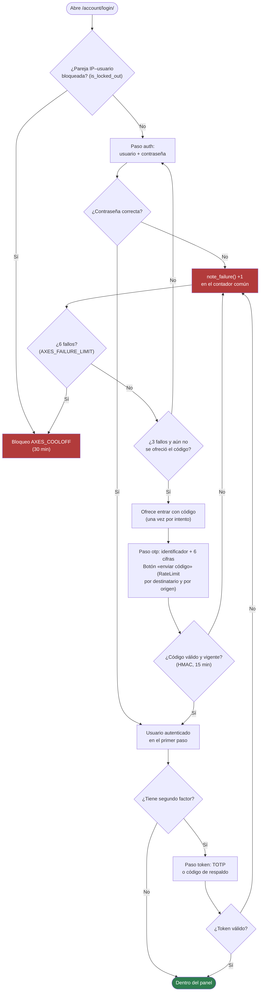
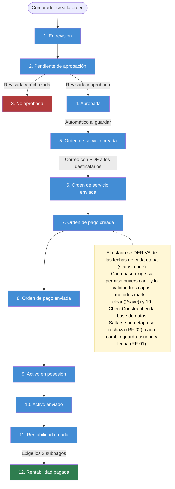
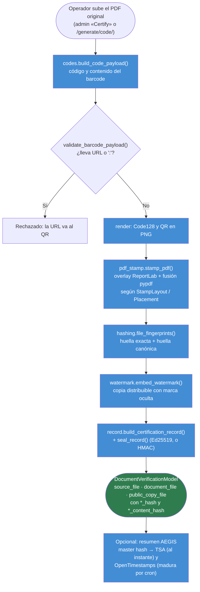
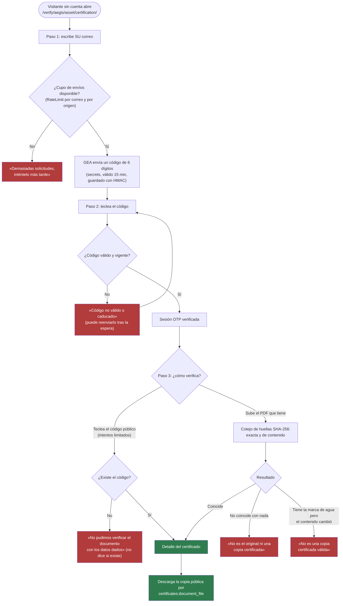
3a. Tipos de prueba
| Tipo de prueba | Qué se prueba en el proyecto | Herramienta o técnica | Responsable |
|---|---|---|---|
| Unitarias | Reglas del modelo y de los servicios: el estado derivado de la orden, los CheckConstraint, la validación del código de barras y la unicidad del código público | unittest de Django (manage.py test --settings=app_core.settings_test, SQLite en memoria) | Juan Sebastián Morales Delgado |
| Sistema | Flujos completos por HTTP con el cliente de pruebas de Django: login en sus 6 recorridos, verificación con OTP, cotejo de archivos y aislamiento entre titulares | Cliente de pruebas de Django; informe con manage.py test_report | Juan Sebastián Morales Delgado |
| Seguridad | Bloqueo por intentos, rutas que responden 404 en lugar de 403, trampa anti-escaneo, cabeceras, dependencias y SRI de recursos externos | Pruebas de account/tests_login_lockout.py, manage.py check_security (bandit, pip-audit), check_attack_terms | Juan Sebastián Morales Delgado |
3b. Casos de prueba
| ID | Funcionalidad o requisito | Tipo | Precondiciones | Pasos y datos de entrada | Resultado esperado |
|---|---|---|---|---|---|
| CP-01 | RF-02: no avanzar una orden saltándose una etapa (FC-2) | Unitaria | OfferModel aprobada, con la orden de servicio creada pero no enviada (service_order_sent_at vacío); usuario con el permiso de la etapa | 1. Llamar a mark_payment_order_created(usuario) sobre esa orden. 2. Releer la orden de la base. | Se lanza ValidationError («You cannot create a payment order before service order is sent»); payment_order_created_at sigue vacío y status_code sigue en «Orden de servicio creada» |
| CP-02 | RF-03: código público único para cada documento (FC-3) | Unitaria | Dos PDF distintos, contrato_a.pdf y contrato_b.pdf, y una secuencia de códigos inicializada | 1. Certificar contrato_a.pdf con certify_document(). 2. Certificar contrato_b.pdf. 3. Comparar sus public_code. | Cada uno recibe un código de 12 caracteres, distinto entre sí y que no existía antes en DocumentVerificationModel |
| CP-03 | RF-05: código de un solo uso al correo antes de mostrar un certificado (FC-4) | Sistema | Documento certificado activo; visitante sin sesión; backend de correo en memoria (locmem) | 1. GET /verify/aegis/asset/certification/. 2. Enviar el correo verificador@banco.test. 3. Leer el correo recibido. 4. Enviar el código de 6 dígitos. 5. Repetir el paso 4 con el mismo código pasados 16 minutos (reloj simulado). | Llega un correo con un código de 6 dígitos y la página pasa al formulario del código público. A los 16 minutos el mismo código responde «Código no válido o caducado.» (validez OTP_TTL_MINUTES = 15) |
| CP-04 | RF-06: detectar un PDF alterado (FC-4) | Sistema | Sesión OTP ya verificada; un documento certificado; copia_alterada.pdf es su copia pública (con marca de agua) con un texto cambiado en la página 2 | 1. Elegir «verificar por archivo». 2. Subir copia_alterada.pdf. 3. Repetir con la copia pública sin tocar. | Con la alterada: «Este archivo lleva la marca de agua oculta de la plataforma, por lo que procede de una copia certificada, pero su contenido ha sido modificado. No es una copia certificada válida.». Con la intacta: se abre el detalle del certificado |
| CP-05 | RNF-01 y RF-07: bloqueo tras intentos fallidos (FC-1) | Seguridad | Usuario activo tenedor.prueba@correo.test con contraseña Clave.Valida.2026; django-axes activo con AXES_FAILURE_LIMIT=6 | 1. En /account/login/, enviar 6 veces la contraseña Incorrecta1. 2. Enviar la contraseña correcta. | Tras el 6.º fallo el acceso queda bloqueado 30 minutos: la contraseña correcta tampoco entra, y el intento queda en el registro de axes |
3c. Criterios de aceptación
- El 100 % de los casos CP-01 a CP-05 aprobados, y
python manage.py test_reportinforma 0 fallos y 0 errores en las 1 156 pruebas. - M-01 = 0:
python manage.py check_securityen el servidor termina sin ningúnAVISO, ypython manage.py check --deploysin advertencias. - M-02 ≥ 70 % de cobertura de sentencias, y M-03 = 100 %:
/health/responde"OK"en todas las comprobaciones posteriores al despliegue.
Estado real (01/11/2026, master 5be1ed9, Python 3.11, DJANGO_DEBUG=False):
| Criterio | Resultado | ¿Cumple? |
|---|---|---|
| 1 | test_report: 1 156 pruebas, 1 156 pasan, 0 fallan, 0 con error, 0 saltadas (155 s) | Sí |
| 2 | check_security: 4 avisos (ver Soporte) | No; planeado para el siguiente sprint |
| 3 | Cobertura 73,8 %; /health/ responde "OK" | Sí |
Las pruebas se ejecutan con DEBUG=False. Con un .env de desarrollo se activa django-debug-toolbar y fallan 8 pruebas de la consola de operaciones.
4. Configuración
4a. Versionado
Situación real: GEA no versiona hoy. pyproject.toml declara 0.1.0 desde el principio, no hay etiquetas de Git y los commits no llevan número.
Esquema [Propuesta]: SemVer MAYOR.MENOR.PARCHE, con etiquetas de Git vX.Y.Z y la versión en pyproject.toml. Aplicado a cambios reales del historial:
| Cambio | Qué número sube | Ejemplo |
|---|---|---|
| Corrección compatible: «Seguridad: fijo wheel ≥ 0.46.2 (CVE-2026-24049)» | PARCHE | 0.2.0 → 0.2.1 |
| Funcionalidad compatible: «C1: certificación documental para emisores externos» | MENOR (PARCHE a 0) | 0.1.0 → 0.2.0 |
Cambio incompatible: por ejemplo, retirar el login antiguo o cambiar jcs.py, lo que invalida los master hash ya anclados | MAYOR | 0.x → 1.0.0 |
4b. Repositorio y ramas
Git con GitHub: sebasmd-projects/gea_module_0, repositorio privado. Pull Requests numerados (#56 a #62 recientes).
| Rama | Propósito |
|---|---|
master | Código estable. Es lo que corre en producción (el servidor hace git pull --ff-only de esta rama) |
feat/* | Una funcionalidad por rama. Hoy: feat/notificaciones, feat/jotform-a-local, feat/solicitud-formulario-de-certificacion-documental |
security/* | Actualizaciones de seguridad de dependencias (security/deps-2026-10) |
claude/* | Ramas de trabajo asistido por IA; pasan por la misma revisión y PR |
4c. Entornos
| Entorno | Propósito | Dónde se ejecuta | Quién tiene acceso | Rama desde la que se despliega |
|---|---|---|---|---|
| Desarrollo | Programar y depurar | Portátil (Windows/PowerShell o Linux) con uv run python manage.py runserver en 0.0.0.0:8000, MySQL o PostgreSQL local, DJANGO_DEBUG=True, correo en consola | El desarrollador | feat/* de su tarea |
| Pruebas | Verificar antes de integrar y enseñar el sistema sin tocar producción | Suite automática con app_core.settings_test (SQLite en memoria) y el demo https://geademo.sebasmd.com, en un cPanel compartido con LiteSpeed (dominio personal) | Desarrollador, revisor y quien recibe el enlace del demo | La rama del Pull Request (suite) · master (demo) |
| Producción | Atender a usuarios reales | cPanel (Conexcol) con LiteSpeed, MySQL 8.0.36, Redis en un VPS por TLS; https://geausa.propensionesabogados.com | Administrador del hosting y superusuarios con segundo factor | master |
El demo está en despliegue. Falta que el proveedor del cPanel compartido dé permiso para instalar mysqlclient, que se compila con las cabeceras de MySQL.
4d. Control de cambios
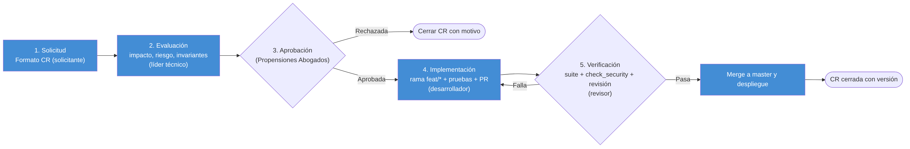
- Solicitud. Quien detecta la necesidad llena el formato de solicitud de cambio (CR). Responsable: el solicitante (SH-01 a SH-03 o un usuario vía PQRS).
- Evaluación. Se analiza el impacto: módulos, invariantes del
CLAUDE.md, migraciones, riesgo y esfuerzo. Responsable: el líder técnico (Juan Sebastián Morales Delgado). - Aprobación. Se aprueba, se rechaza o se pospone, y se fija la versión destino. Responsable: la Dirección administrativa (SH-02) de Propensiones Abogados.
- Implementación. Rama
feat/*ofix/*, código con su prueba y Pull Request haciamaster. Responsable: el desarrollador asignado. - Verificación. Suite completa,
check_securityy revisión del PR. Si pasa, merge y despliegue; si no, vuelve al paso 4. Responsable: el revisor del PR.
El proceso y el formato son [Propuesta]: hoy los cambios se registran como Pull Requests de GitHub, sin formato de solicitud. El ejemplo usa un cambio real (el commit «Un certificado puede tener varios titulares, no solo uno»); el ID, la fecha y el solicitante son ilustrativos.
Formato de solicitud de cambio:
| Campo | Ejemplo |
|---|---|
| ID | CR-2026-014 |
| Fecha | 01/11/2026 |
| Solicitante | Juan Sebastián Morales Delgado |
| Descripción | Un certificado debe poder tener varios titulares, no solo uno |
| Justificación | Los integrantes de una organización quedaban fuera del histórico |
| Impacto | certificates (FK → M2M holders), migración, code_gen/access.py; riesgo medio |
| Prioridad | Alta |
| Estado | Aprobado / En curso / Verificado / Cerrado / Rechazado |
| Responsable | Juan Sebastián Morales Delgado |
| Versión destino | 0.3.0 |
5. Despliegue
5a. Requisitos técnicos mínimos
| Categoría | Requisito | Valor mínimo |
|---|---|---|
| Software | Python | 3.11 |
| Software | Framework | Django 5.2 LTS (>=5.2,<6.0) |
| Base de datos | Motor | MySQL 8.0.11 (producción: 8.0.36), o MariaDB 10.5, o PostgreSQL 14 |
| Software | Caché y límites de intentos (recomendado) | Redis con TLS (puerto 6380) y usuario ACL |
| Hosting | Servidor de aplicación | cPanel con aplicación Python, servidor LiteSpeed y acceso SSH |
| Almacenamiento | Espacio libre | 1 GB (estáticos ≈ 45 MB, más media, respaldos y logs; estimación) |
| Red | HTTPS | Certificado TLS válido (AutoSSL) en el puerto 443 |
| Software | Procesado de vídeo | ffmpeg en el PATH (galería multimedia) |
| Software | Conector de MySQL | mysqlclient 2.2.8. Se compila al instalarse: necesita las cabeceras de MySQL (libmysqlclient-dev o mysql-devel) y pkg-config. En un cPanel compartido hay que pedírselas al proveedor |
Arquitectura de despliegue
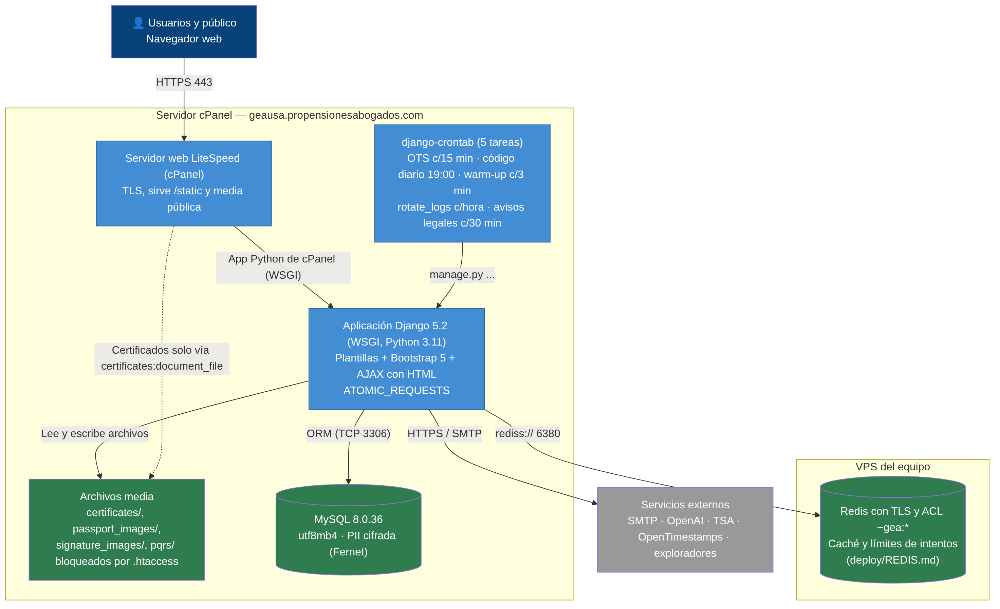
5b. Procedimiento de instalación
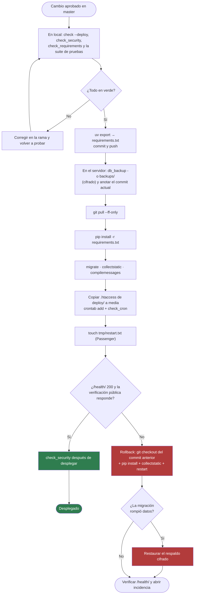
- Comprobar en local con
uv run python manage.py check --deploy,check_securityycheck_requirements. → Los tres terminan sin hallazgos. - Exportar dependencias con
uv export --no-dev --format=requirements-txt > requirements.txt, y hacer commit. →check_requirementsconfirma que producción instalará lo declarado. - Respaldar en el servidor con
python manage.py db_backup -o backups/. → Se crea el respaldo cifrado con permisos600. - Traer el código con
git pull --ff-only. → Git responde «Fast-forward» sin conflictos. - Instalar dependencias con
pip install -r requirements.txten el entorno virtual de la aplicación Python de cPanel. → Termina sin errores ypip checkresponde «No broken requirements found». Si falla al compilarmysqlclient, faltan las cabeceras de MySQL en el servidor (requisito de 5a). - Completar el
.env(copiado dedocs/env.example) y ejecutarpython manage.py check. → No apareceImproperlyConfigured; si falta una variable, el mensaje dice cuál. - Migrar y recoger estáticos con
python manage.py migrate,collectstatic --noinputycompilemessages. → Una segunda ejecución demigratedice «No migrations to apply», ycollectstatictermina sin errores. - Proteger la media copiando
deploy/media.htaccessaMEDIA_ROOTydeploy/media-protected.htaccessacertificates/,passport_images/,signature_images/ypqrs/. →curl -I https://geausa.propensionesabogados.com/public/media/certificates/documents/<archivo>.pdfresponde 404. - Instalar las tareas programadas con
python manage.py crontab add. →python manage.py check_cronlista las 5 tareas: anclajes OTS, código diario, calentamiento, rotación de logs y avisos legales. - Reiniciar con
touch tmp/restart.txt. →curl -I https://geausa.propensionesabogados.com/health/responde 200, y la verificación pública carga.
5c. Plan de reversión
[Propuesta] GEA no tiene un procedimiento de reversión escrito. Este se basa en sus herramientas reales: git, db_backup y el reinicio de la aplicación.
- Detectar que
/health/no responde 200 o que la verificación pública falla tras desplegar, y anotar el commit que había antes delgit pull(paso 3). - Volver al código anterior con
git checkout <commit_anterior>. Después:pip install -r requirements.txt,collectstatic --noinputytouch tmp/restart.txt. - Si una migración dañó datos, restaurar el respaldo cifrado del paso 3 con la
GEA_BACKUP_PASSPHRASE. - Verificar:
/health/responde 200, un login de prueba funciona y una verificación de certificado funciona. Después, abrir una incidencia con la causa.
5d. Evidencia
Capturas reales tomadas el 01/11/2026 de las páginas públicas de producción (todas respondieron 200):
https://geausa.propensionesabogados.com 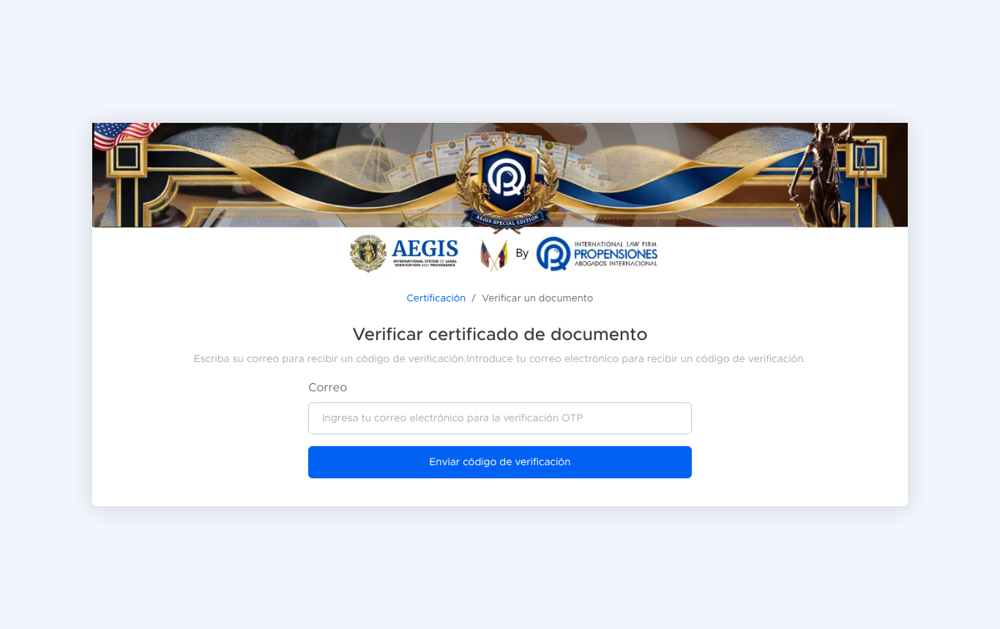
portal de verificación, paso 1: pide el correo del visitante 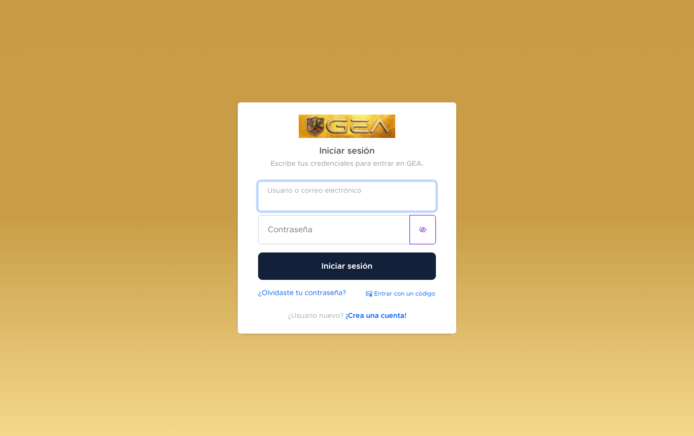
inicio de sesión en /account/login/
6. Soporte
6a. Canal y formato de reporte
Canales:
- Usuarios externos: el formulario PQRS del propio sitio (módulo
pqrs, con plazos legales). Existe en el código. - Equipo: GitHub Issues del repositorio [Propuesta].
- Vulnerabilidades: por correo a
info@propensionesabogados.com(el mismo contacto de los correos OTP), nunca en un Issue público.
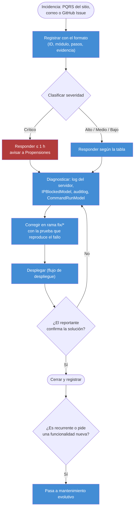
Formato de reporte de incidencia:
| Campo | Ejemplo |
|---|---|
| ID / radicado | INC-2026-031 |
| Fecha y hora | 01/11/2026 09:42 |
| Reportado por | verificador@banco.test (SH-06) |
| Módulo o URL | /verify/aegis/asset/certification/ |
| Tipo de usuario | Verificador externo (sin cuenta) |
| Severidad | Alto |
| Descripción y pasos para reproducir | 1. Escribir su correo en el portal de verificación. 2. Pulsar «Enviar código de verificación». 3. No llega el correo |
| Resultado esperado / obtenido | Correo con 6 dígitos / ningún correo en 10 min |
| Evidencia | Captura y hora exacta, para buscar en el log del servidor |
| Estado y responsable | Abierto · Juan Sebastián Morales Delgado |
6b. Niveles de severidad
Los tiempos son [Propuesta]: GEA no tiene hoy un acuerdo de nivel de servicio. Los ejemplos son fallos posibles en módulos reales.
| Nivel | Ejemplo en el proyecto | Tiempo máx. de respuesta | Tiempo máx. de solución |
|---|---|---|---|
| Crítico | Nadie puede iniciar sesión, la verificación pública responde 500, o un PDF certificado se descarga por URL directa sin permiso | 1 h | 8 h |
| Alto | El OTP de verificación no llega por correo, o el asistente de aprobación no deja avanzar una orden válida | 4 h | 24 h |
| Medio | La traducción automática falla y queda solo el español, o la vista previa de estampado se ve desplazada | 24 h | 72 h |
| Bajo | Una errata o una traducción pendiente en un .po | 72 h | 168 h |
6c. Ciclo de mantenimiento
| Tipo | Frecuencia | Qué lo dispara | Responsable |
|---|---|---|---|
| Correctivo | Bajo demanda, en los tiempos de 6b, más una revisión semanal del log del servidor y de check_security | Una PQRS o Issue con fallo, /health/ sin "OK", o un AVISO de check_security. Ya ocurrió: los commits de octubre de 2026 suben pillow, pypdf, urllib3, pyjwt, certifi y wheel por avisos abiertos | Juan Sebastián Morales Delgado |
| Evolutivo | Mensual, por entrega | Una solicitud de cambio aprobada (por ejemplo, el centro de notificaciones en tiempo real o sacar los formularios de JotForm) o un cambio normativo | Dirección administrativa (SH-02) prioriza; Juan Sebastián Morales Delgado implementa |
Hallazgos de seguridad abiertos y plan (siguiente sprint)
Resultado de python manage.py check_security en el servidor el 01/11/2026: 4 hallazgos y 1 comprobación sin hacer. Cada uno se evaluó contra el código.
| # | Hallazgo | Evaluación | ¿Vulnerabilidad? | Acción planeada para el siguiente sprint |
|---|---|---|---|---|
| H-1 | certificates:external_issue (POST /api/certificates/external/) «no tiene control de acceso» | Sí lo tiene, pero en una forma que el escáner no reconoce: _gate() autentica al emisor con la cabecera X-Issuer-Key (comparada en tiempo constante con hmac.compare_digest), responde el mismo 403 genérico ante cualquier fallo, cuenta los fallos por IP y aplica un cupo por emisor (60 por hora) que falla cerrado si la caché cae. El escáner busca mixins de acceso y estas son vistas de función | No: falso positivo del escáner | Declarar la ruta en INTENTIONALLY_PUBLIC de check_security.py con su razón escrita, o enseñar al escáner a reconocer _gate(), para que M-01 deje de contarla |
| H-2 | certificates:external_public_copy (GET …/external/<id>/public-copy/) | La misma autenticación, y además solo entrega documentos del emisor autenticado (external_issuer=slug); un documento ajeno responde 404 | No: falso positivo | La misma acción que H-1 |
| H-3 | certificates:external_revoke (POST …/external/<id>/revoke/) | La misma autenticación y el mismo filtro por emisor; revocar es idempotente | No: falso positivo | La misma acción que H-1 |
| H-4 | pypdf 6.21.2 con 7 avisos (CVE-2026-119203, CVE-2026-119204, CVE-2026-119205 y 4 más) | GEA lee con pypdf PDF que llegan de fuera: el cotejo del portal público y la API de emisores externos. Un PDF manipulado llega directo a la biblioteca vulnerable | Sí | Subir pypdf a 6.21.4 o superior (corrige los 7 avisos), uv lock, uv export a requirements.txt, ejecutar la suite completa (sobre todo las de certificación y cotejo) y desplegar |
| H-5 | msgpack 1.2.2 (1 aviso). Lo marca pip-audit -r requirements.txt; no apareció en el servidor | Está declarado en requirements.txt; falta confirmar qué versión tiene instalada el servidor | Sí, si esa versión está instalada | Subir a 1.2.3 junto con H-4 y comprobar con pip show msgpack en el servidor |
| — | bandit «SIN MIRAR» | No es un hallazgo: es una comprobación que no se hizo, porque bandit es herramienta de desarrollo y no está instalado | Desconocido hasta ejecutarlo | uv add --dev bandit, ejecutar check_security en local y tratar lo que salga |
Al cerrar el sprint, check_security debe terminar con 0 AVISO (M-01 = 0).
7. Documentación
Paso 7. Artefactos de documentación
| Artefacto | Herramienta o formato | Propósito | Audiencia | Evidencia |
|---|---|---|---|---|
| README | Markdown en GitHub (README.md) | Qué es GEA, sus procesos, el stack y cómo arrancarlo | Desarrolladores | README.md en GitHub (commit 5be1ed9) |
| Bitácora de cambios (CHANGELOG) | CHANGELOG.md en el repositorio, por versión. No existe todavía: hoy la bitácora es el historial de commits en GitHub | Registrar qué cambió en cada entrega | Equipo, Propensiones y auditores | CHANGELOG.md no existe en GEA; bitácora reconstruida desde el historial de Git (385 commits, 67 de ellos fusiones): historial de commits en GitHub |
| Manual de usuario | Guía HTML y PowerPoint, en español e inglés (docs/verificar-certificado.html, docs/verify-certificate.html, .pptx) | Explicar paso a paso, con capturas anotadas, cómo verificar un certificado y qué se puede compartir | Titulares y verificadores externos (SH-05, SH-06) | docs/verificar-certificado.html (commit 5be1ed9); también existe docs/verificar-certificado.pptx |
| Tablero de seguimiento | GitHub Projects (columnas Por hacer / En curso / En revisión / Hecho), enlazado a Issues y PR. No existe todavía: hay que crearlo con las tareas reales (las ramas feat/notificaciones, feat/jotform-a-local, feat/solicitud-formulario-de-certificacion-documental y security/deps-2026-10) | Seguir cada tarea con su responsable y su PR | Equipo y Propensiones | Tablero pendiente: aún no existe en GitHub; se creará con las ramas reales (feat/notificaciones, feat/jotform-a-local, feat/solicitud-formulario-de-certificacion-documental, security/deps-2026-10). |
| Documento de arquitectura y manual técnico | Markdown en el repositorio: CLAUDE.md (mapa de arquitectura e invariantes), docs/ROUTES_MAP.md, docs/FEATURES_MAP.md, docs/SEGURIDAD.md, docs/GETTING_STARTED.md, más los diagramas C4 de esta página | Explicar quién llama a quién, las reglas que no se pueden romper y cómo instalar | Desarrolladores y operación | Los diagramas de abajo y docs/GETTING_STARTED.md (commit 5be1ed9) |
Arquitectura de software
Estilo: monolito modular en Django (patrón Modelo-Vista-Plantilla), con páginas renderizadas en el servidor y acciones AJAX que devuelven HTML ya renderizado. No hay SPA, ni build de JavaScript, ni API REST. Cada proceso de negocio es una app de Django, y common.utils es la base que todas usan y que no importa nada de negocio.
Decisiones de arquitectura y el atributo de calidad que protegen:
| Decisión | Atributo ISO 25010 |
|---|---|
El estado de una orden se calcula desde las fechas de cada etapa, nunca se guarda, y se valida en tres capas (métodos, clean()/save() y 10 CheckConstraint) | Fiabilidad (integridad) |
| El admin y las rutas sin permiso responden 404, nunca 403, para no confirmar que existen | Seguridad |
Los límites de intentos pasan todos por RateLimit, que falla cerrado si Redis cae | Seguridad y fiabilidad |
| La PII va cifrada en la base (Fernet) y los respaldos van cifrados | Seguridad (confidencialidad) |
| Un certificado son tres archivos con dos huellas cada uno; el registro va sellado con Ed25519 | Seguridad (no repudio) |
Cada petición corre en una transacción (ATOMIC_REQUESTS); nada que salga a la red bloquea esa transacción | Fiabilidad |
El servicio de certificación (code_gen/services) es un paquete con un módulo por responsabilidad | Mantenibilidad |
Diagramas C4:
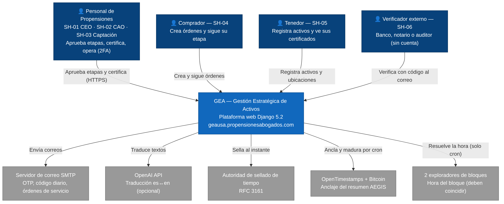
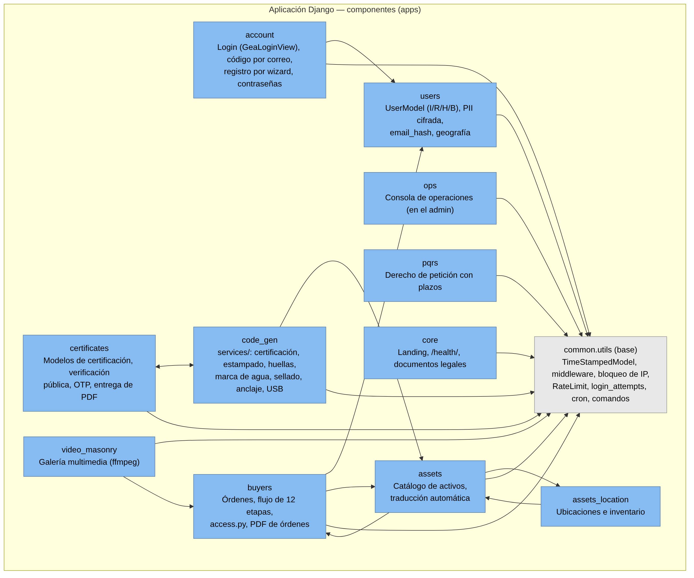
certificates y code_gen se importan mutuamente a propósito: uno tiene los modelos y el otro los algoritmos.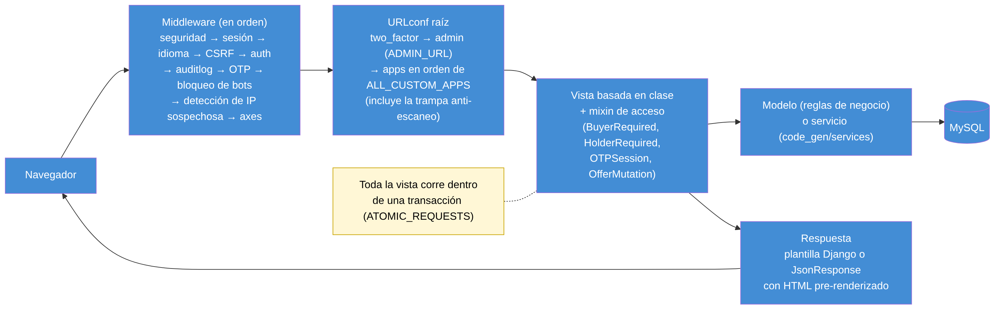
8. Referencias
Repositorio de la actividad (control de versiones): https://github.com/sebasmd-projects/ing-requisitos-actividad-final-sebastian-morales
Department of Defense. (1994). Software development and documentation (MIL-STD-498). Department of Defense.
International Organization for Standardization. (2011). ISO/IEC 25010:2011 Systems and software engineering — Systems and software Quality Requirements and Evaluation (SQuaRE) — System and software quality models. https://www.iso.org/standard/35733.html
MIT OpenCourseWare. (s. f.). Boletín S7: Cómo documentar un sistema de software (Curso 6.170). http://mit.ocw.universia.net/6.170/6.170/f01/related-resources/documentation.html
Pressman, R. S. (2014). Software engineering: A practitioner's approach (8.ª ed.). McGraw-Hill Education.
sebasmd-projects. (2026). GEA — Gestión de activos históricos (gea_module_0) [Software]. GitHub. https://github.com/sebasmd-projects/gea_module_0
Solarte, G., Muñoz, L. y Arias, B. (2009). Modelos de calidad para procesos de software. Scientia et Technica, 15(42). http://www.redalyc.org/articulo.oa?id=84916714069
Sommerville, I. (2011). Ingeniería del software (9.ª ed.). Addison-Wesley.
Uso de inteligencia artificial
Se usaron herramientas de inteligencia artificial (asistentes de lenguaje, entre ellas Claude de Anthropic) como apoyo para el diseño visual del sitio y para la redacción, con revisión de la coherencia y la cohesión del texto. El contenido técnico se tomó del código y del historial de Git de GEA, con su fuente indicada en cada sección.
Autoría y responsabilidad: Juan Sebastián Morales Delgado es el autor de este trabajo y se hace responsable de su contenido.